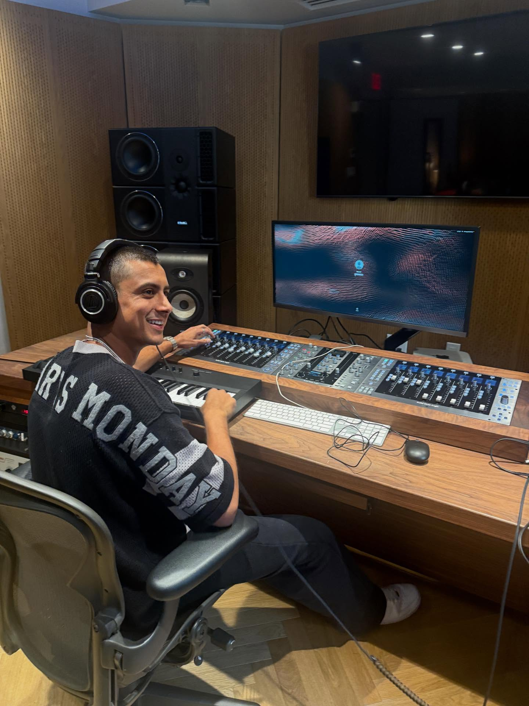

Most people at a concert are thinking about the music. The manager in the room is thinking about everything else.
Who is watching from the crowd. Whether the booking fee was worth it. What the next show should be, in what city, at what size venue. Whether the set went well enough to send a clip to a label contact. The show is the product, but for the manager, it is also a working session. Every room is a room full of data.
Artist management is one of those jobs that is easy to gesture at and hard to actually explain. It is not booking shows, though managers are involved in that. It is not making music, though managers often shape creative direction. It is not the label or the lawyer or the publicist, but the manager talks to all of them, usually more than anyone else does. The simplest version: the manager runs the business so the artist can focus on the music. In practice, the boundaries are a lot blurrier than that.
Three managers working in the electronic music space sat down to talk through what the job actually looks like, how they got into it, and what they have learned along the way.
The Invisible Architecture
The music industry is full of visible jobs. Artists perform. Producers record. Labels release. Agents book. But the manager operates somewhere underneath all of it, the connective tissue that holds every piece of the operation together, answering to everyone and officially employed by none of them.
"The worst thing you could be is someone who doesn't believe in you. It's a relevancy game."
Kamran KhanIn an era when an artist can go viral on TikTok on a Tuesday and be playing a 500-person headline show by Friday, the manager is the one who makes sure that moment leads somewhere. That means coordinating with agents on bookings, pushing label conversations, overseeing release strategy, managing brand partnerships, directing social content, and keeping the artist mentally intact through all of it. There is no job description, because the job is everything that is not covered by anyone else's job description.
And the financial stakes are real. As Jake Horovitz breaks it down: "There's different pegs of where you're going to make money. Touring is probably about half, records is about 25 to 30%, once you get to two million monthly listeners." The manager's commission runs across all of it. Which means if any one peg is missing, everybody loses.
Everything Except the Music

Ask any of these three managers what their actual job is, and you will get the same answer dressed in different words.
"I want to do everything I can to take everything off the artist except for making music and performing," says Kamran. "Music is king. The talent from the creative side is what drives everything. My job is to take the least stress off them as possible."
Ryan MacAvoy frames it as a corporate structure: "The manager is the COO. The artist is the CEO. Some managers get that twisted." It is a clean distinction that obscures how messy the reality can be. When an artist is early-stage and still figuring out who they are, the manager is not just running operations. They are helping build the identity those operations are supposed to serve.
Horovitz learned this managing DJ Press Play, a joke EDM act that accidentally got three million streams and suddenly had to become a real project. There was no actual artist at the center of it, just a performer in a helmet and music outsourced to different producers. "Since there was no artist, we had to be the artist, basically. We had to have complete creative direction of the project." It was chaotic. It was also, he says, the best education he could have had.
That same dynamic would define his later work with DJ Mandy, a TikTok-famous personality who needed a manager willing to wade into creative decisions, not just business ones. "Mandy works very closely with me, and we bounce everything. We're a team. We're partners."
5:15 A.M. and Counting

If there is a single data point that communicates what music management actually demands, it might be this: Ryan MacAvoy typically wakes up between 5:15 and 5:45 in the morning. He works until 9:30 at night, with a break around six to cook dinner. On weekends when he is not touring, he puts in another six to eight hours.
— Ryan MacAvoy
His schedule is almost architectural in its precision. Morning hours are reserved for creative work, because that is when his thinking is sharpest. A 9 a.m. call with Coastal every single day, fifteen minutes. A 9:30 core team meeting. Heads-down work from 10 to 1. Rolling calls from 1 to 4, stacked back-to-back so the afternoon's second caffeine hit carries him through. A third creative session from 8 to 9:30 p.m. Then he does it again tomorrow.
When he is touring, which runs most weekends from Thursday through Sunday, the routine collapses into something rawer. Late nights. Early flights. Hotel rooms that blur together. "I've been on the road since like March 22nd," he says. "I have a lovely girlfriend who lives in LA and she hates when I travel."
For Kamran, especially in the early days with Laszewo, the road was also a financial decision as much as a logistical one. "I've been traveling more than a usual manager would, just to do what I can to be there for the group, create a level of comfort, and save costs where we can." When the team is lean, the manager fills in everywhere, tour managing, acting as a de facto agent, handling business logistics that would eventually belong to someone else. "A lot of it is doing it all ourselves," he says. "My job is to fill these roles and be the nucleus."
Pattern Recognition, Patience, and a Marketing Brain
The question of what makes a great manager, as opposed to a competent one, does not have a clean answer. But three themes surface consistently across these conversations: marketing fluency, genuine passion, and the ability to see around corners.
MacAvoy is unambiguous about where he sees the industry heading. "I am a marketing-first manager. I think marketing is the most important thing in entertainment right now." His background spans digital ads, influencer campaigns, social strategy, and a SaaS platform he has been building for music industry marketing. For his artists, that means running ads, understanding how algorithms respond to content, and knowing when organic momentum is real versus when it needs a push.
But all the marketing sophistication in the world does not substitute for the foundational thing.
"I've never been able to fake being passionate about something, and I've never been good at anything I wasn't naturally passionate about."
Kamran KhanMacAvoy puts the selection criteria simply: "I like working with good people and with people willing to put in the effort to match me. It's the person behind the music and the brand you develop that's almost more important." He does not chase viral moments or hot names. He looks for work ethic, for fit, for the human being behind the project, because that is who he is going to be spending the next several years in close quarters with.
The Hard Part
Ask Ryan MacAvoy what the hardest part of being a manager is. He does not hesitate.
"Dealing with talent."
Ryan MacAvoyThe specifics, when he gets into them, are recognizable to anyone who has ever been responsible for someone else's career: artists in duos who disagree with each other, bottlenecks in decision-making, clients who see what a peer has and want it immediately without accounting for how long it actually took that peer to get there. "You have to be patient. Everyone has a different process. Everyone has a different path." He calls himself a coach as much as a manager, keeping artists motivated, pushing them toward the best version of themselves. "Sometimes that's over-passionate," he admits. "And that's where the friction comes in."
For Horovitz, the friction took a specific form with a client who had real momentum and genuine talent but was reluctant to make original music. She wanted to stay in the lane of DJ sets. It became a standoff. "Making music is a non-negotiable part of this. If you're not working toward releasing music, that's a problem." The math was simple and brutal. A DJ making $700 a show with no original music generates around $25,000 a year in bookings. A 20 percent management commission on that is not a living for anyone.
Kamran offers the most expansive take on why the job is emotionally demanding in a way that catches people off guard. "The artist and manager relationship is the most intimate," he says. "There are so many ups and downs. The relationship is everything."
Nobody Got Here the Normal Way
None of these three men planned to be music managers.

Kamran was deep into fintech consulting in the Bay Area when a family connection put him in front of a longtime production manager for The Chainsmokers. He had always been drawn to the manager-artist story, Kygo's rise, Avicii, Louis the Child, but had not yet converted that interest into action. During COVID, fully remote and restless, he found a group on SoundCloud and DM'd them on Instagram. He eventually flew out to Santa Barbara, showed up at their house, and told them he wanted to manage them. They said yes. "There's really no textbook way into it," he says, "and I for sure didn't have a textbook way into it."
MacAvoy grew up in Long Island and watched Entourage his freshman year of college. "I never knew people worked in the entertainment industry like this. I didn't know it was truly a business." What followed was a decade-long relay race through a college booking agency he built in Ohio, the CAA mailroom, the early TikTok content house scene, and eventually back to artist management. His first real client called him from jail in week one and tried to get him to wire $10,000. "So my introduction to music management was quite insane," he says.
The through-line is not geography or education or connections. It is the willingness to show up before you are qualified, say yes before you are ready, and figure it out on the way.
The Algorithm Changed Everything
The industry these three managers are working in looks different from the one that existed even five years ago, and it is changing faster than the rulebook can keep up.
TikTok created a new pipeline for discovery and a new trap. Artists can accumulate millions of followers without the infrastructure to convert that attention into a sustainable career. MacAvoy, who lived through the early TikTok explosion alongside the platform's biggest influencers, sees this clearly.
"Developing talent is kind of a lost art nowadays. A lot of people just try to pick up artists off TikTok and think they can become a talent manager."
Ryan MacAvoyFor Kamran, the shift shows up in how opportunity flows. "As we continue to grow, that slide and scale changes, but there's always still those outbound opportunities you're going after too." Early in a career, management is almost entirely outreach: asking for support slots, pitching festivals, chasing any door that might open. As an act develops real traction, offers start coming in. The job shifts from hunting to filtering, but the hunting never fully stops.
The modern manager needs to be fluent in streaming data, content strategy, ad platforms, and brand partnerships, on top of tour routing, label negotiations, and the thousand other things the job has always required. The scope keeps expanding. The commission does not.
Show Up Before You're Ready
The advice these managers offer to anyone trying to break in is not complicated. It just requires patience that most people struggle to hold onto.
Find an artist you genuinely believe in, not someone who already has a deal or a million followers, but someone you would bet on before anyone else does. Build relationships without agenda: with agents, with other managers, with lawyers, with promoters, with anyone in any room you can get yourself into. Stop comparing your timeline to someone else's.
"I've never really been super focused on volume," says Kamran, who has kept his roster deliberately small. "I've always been against being a volume-heavy manager. I never wanted to put myself or an artist in a position where I'm doing them a disservice."
For Kamran, the whole thing traces back to something simpler than strategy. "The two things where work doesn't feel like work," he says, "are tennis and this. Music and management."
The Career Nobody Planned, and Nobody's Leaving
None of them planned this. All of them are exactly where they are supposed to be.
Horovitz still writes screenplays on weekends and still loves movies. But he has made his peace with what actually happened. "I've definitely accepted that music and music management is where I'm going to be." He is building DJ Mandy toward what he believes, without apology, is a top-twenty Gen Z musical act in the world. "Really," he says, "the name of the game for us now is just to get a viral song. Once we get that, I think we'll be kind of made."
MacAvoy is touring almost every weekend, running ad campaigns at midnight, and waking up at 5:15 to do it again. Kamran is finishing an MBA part-time at UCLA, managing two acts with different sounds and the same relentless upward trajectory, building a team he describes as some of his closest friends.
The artists they are betting on right now, DJ Mandy, Laszewo, Coastal, Conrad, Distant Matter, are the names that will matter in five years. And when they do, the people who made it happen will be the ones nobody saw, standing just off stage, watching for the next opportunity before anyone else even knows to look.